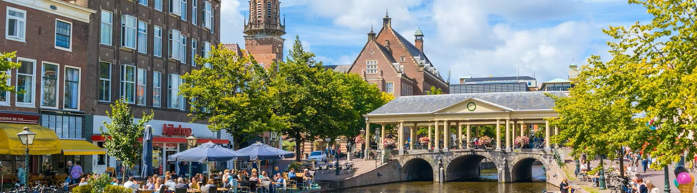

Persoonlijke informatie 
Mijn naam is Julianne. Ik ben 19 jaar oud, en kom uit Leiden. Ik heb 5 jaar lang op het stedelijk gymnasium in Leiden gezeten, maar ik heb de afgelopen twee jaar volwassenonderwijs gevolgd bij MBORijnland. Hier heb ik een HAVO diploma gehaald.
Bijbaan en vrije tijd
Ik werkte een maand geleden nog bij de Dunkin Donuts in Leiden, maar moest hier helaas weg vanwege mijn verhuizing. Ik heb hier nog niets nieuws gevonden, maar ben dit wel van plan. Daarnaast speel ik harp en hou ik erg van het bezoeken van concerten van vele soorten genres.